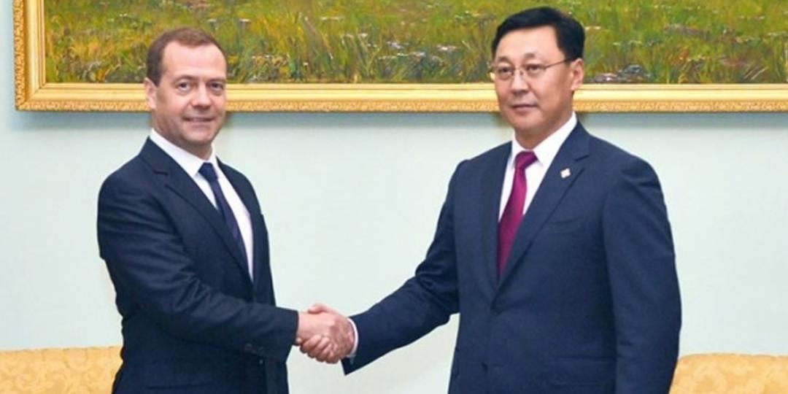
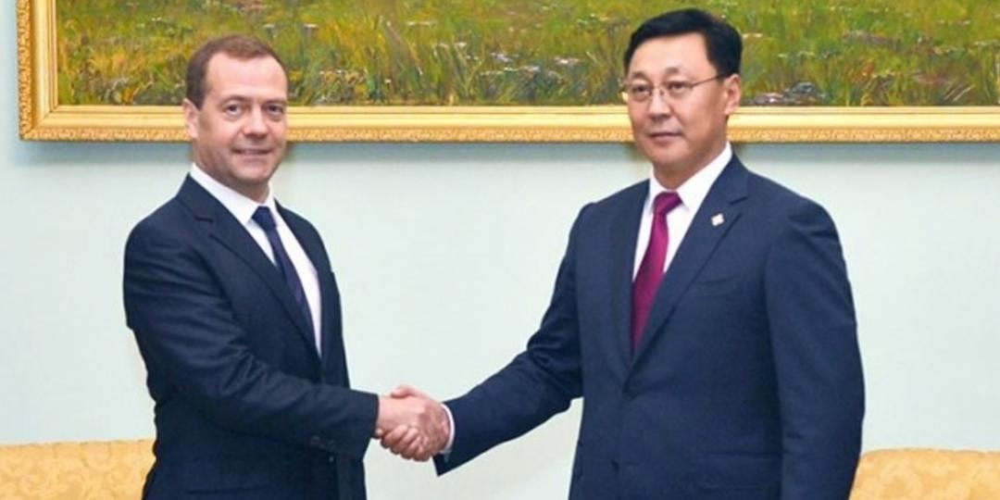

The Prime Minister and His Power
 

The Prime Minister of Mongolia is the head of the Government, the highest executive body of the State.
The Prime Minister leads the Government under the Constitution and is responsible to the Parliament for the implementation of state laws.
It is the prerogative right of the country's President to propose to the State Ikh Hural (Parliament ) the candidature for the appointment to the post of Prime Minister in consultation with the majority faction or parties in Parliament if none of them has a majority of seats, as well as to propose to the State Ikh Hural the dissolution of the Government.
The Government comprises the Prime Minister and his/her Cabinet members. The Prime Minister, in consultation with the President, submits his/her proposals on the structure and composition of the Government and on the changes in these to the Parliament. The latter considers the nominees proposed by the Prime Minister one by one, and takes decision on their appointment.
The State Ikh Hural is entitled to take decisions regarding the Government's resignation or formation of a new one, resignation of its members or releaving him/ her from the duty, assignment of a new Cabinet member, and a vote of confidence to the Government in accordance with the Constitution and other relevant laws.
The term of the mandate of the Government is four years and its term of office starts from the day of the appointment of the Prime Minister by the Parliament and terminates upon the appointment of a new Prime Minister.
The Prime Minister may tender his/her resignation to the National Parliament before the expiry of his/her term of office if he/she considers that the Government is unable to exercise its powers.
The Government steps down en masse upon the resignation of the Prime Minister or if half of the members of the Government resign at the same time.
The Parliament considers the matter and makes a final decision within 15 days after taking the initiative to dissolve the Government or receiving the President's proposal or the Prime Minister's statement of resignation.
The Parliament considers and takes decision on the dissolution of the Government if not less than one quarter of lawmakers formally propose the dissolution of the Government.
The Government is entitled to the right of a legislative initiative in the same manner as the President and the members of the State Ikh Hural.
If the Government submits a draft resolution requesting a vote of confidence, the National Parliament makes a final decision within 15 days after receiving the draft resolution.